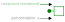
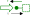
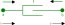

Sign Convention
A sign convention is recommended for this library that implements the following rule:
An input component that specifies the through variable should be such that an oppossite equality is written such that when connected to a conserved quantity component (i.e. a mass or capacitor component) a positive value for a flow variable represents the accumulation of that conserved quantity over time in the component.
Note: that this implements the same convention as applied in Modelica Standard Library.
For example, the following would be the correct sign convention for the Mechanical.Translational force variable f
@mtkmodel ConstantForce begin
@parameters begin
f = 0
end
@components begin
flange = MechanicalPort()
end
@equations begin
# connectors
flange.f ~ -f # <-- force is leaving
end
endAnd writing the following would be the incorrect sign convention.
@equations begin
# connectors
flange.f ~ f # <-- wrong through variable input sign!
end<!– To visualize the sign convention, one can draw the orientation of the connector port across and through variables and the subsequent component variables. For example, the Mechanical.Translation mass component would look like

In this case we know from Newton that mass times acceleration equals force, therefore the direction of movement is in the opposite direction of the force. In other words, if we push the mass from left to right (i.e. in the positive direction), then the mass will generate a force in the negative direction. This would be the general rule for a single port component of any domain. The exception is for a through variable input component, which should align the component and port connection through variables. For example, a force input diagram would look like this:

For a 2 port connection component, then the through variable is exiting each connection port in opposing directions. Using a damper as an example, if the positive direction is to the right, then the force of the damper is pushing left (i.e. in the negative direction) on connection port a and right (positive direction) on connection port b.
 –>
Discussion
The energy dissipation equation that governs the acausal connection definitions should be such that a positive through variable input will lead to an increasing across variable value.
\[\frac{\partial \blue across}{\partial t} = \text{ {\green through} input}\]
This is demonstrated in the following domains of Mechanical, Electrical, and Hydraulic.
Mechanical
The flow variable (i.e. force) input component for the Mechanical domain is
using ModelingToolkit
using ModelingToolkitStandardLibrary.Mechanical.Translational
using ModelingToolkit: t_nounits as t
@mtkmodel ConstantForce begin
@parameters begin
f
end
@components begin
flange = MechanicalPort()
end
@equations begin
# connectors
flange.f ~ -f
end
endModelingToolkit.Model{typeof(Main.__ConstantForce__), Dict{Symbol, Any}}(Main.__ConstantForce__, Dict{Symbol, Any}(:components => Any[Union{Expr, Symbol}[:flange, :MechanicalPort]], :kwargs => Dict{Symbol, Dict}(:f => Dict{Symbol, Union{Nothing, DataType}}(:value => nothing, :type => Real)), :independent_variable => t, :parameters => Dict{Symbol, Dict{Symbol, Any}}(:f => Dict(:type => Real)), :equations => Any["flange.f ~ -f"]), false)Here we can see that a positive input force results in an increasing velocity.
@mtkmodel Model begin
@components begin
mass = Mass(; m = 10)
force = ConstantForce(; f = 1)
end
@equations begin
connect(mass.flange, force.flange)
end
end
@mtkcompile sys = Model()
full_equations(sys)\[ \begin{align} \frac{\mathrm{d} \mathtt{mass.v}\left( t \right)}{\mathrm{d}t} &= \mathtt{mass.g} + \frac{\mathtt{force.f}}{\mathtt{mass.m}} \\ \frac{\mathrm{d} \mathtt{mass.s}\left( t \right)}{\mathrm{d}t} &= \mathtt{mass.v}\left( t \right) \end{align} \]
Electrical
The flow variable (i.e. current) input component for the Electrical domain is
using ModelingToolkitStandardLibrary.Electrical
@mtkmodel ConstantCurrent begin
@parameters begin
i
end
@components begin
p = Pin()
n = Pin()
end
@equations begin
0 ~ p.i + n.i
i ~ -n.i # can also be written as i ~ p.i
end
endModelingToolkit.Model{typeof(Main.__ConstantCurrent__), Dict{Symbol, Any}}(Main.__ConstantCurrent__, Dict{Symbol, Any}(:components => Any[Union{Expr, Symbol}[:p, :Pin], Union{Expr, Symbol}[:n, :Pin]], :kwargs => Dict{Symbol, Dict}(:i => Dict{Symbol, Union{Nothing, DataType}}(:value => nothing, :type => Real)), :independent_variable => t, :parameters => Dict{Symbol, Dict{Symbol, Any}}(:i => Dict(:type => Real)), :equations => Any["0 ~ p.i + n.i", "0 ~ p.i + n.i", "i ~ -(n.i)"]), false)Here we can see that a positive input current results in an increasing voltage. Note that the electrical domain uses pins p and n at each side of the source and energy storage components. The direction of connection is not important here, only that a positive connector p connects with a negative connector n.
@mtkmodel Model begin
@components begin
capacitor = Capacitor(; C = 10)
current = ConstantCurrent(; i = 1)
ground = Ground()
end
@equations begin
connect(current.n, capacitor.p)
connect(capacitor.n, current.p, ground.g)
end
end
@mtkcompile sys = Model()
full_equations(sys)\[ \begin{align} \frac{\mathrm{d} \mathtt{capacitor.v}\left( t \right)}{\mathrm{d}t} &= \frac{\mathtt{current.i}}{\mathtt{capacitor.C}} \end{align} \]
Reversing the pins gives the same result
@mtkmodel Model begin
@components begin
capacitor = Capacitor(; C = 10)
current = ConstantCurrent(; i = 1)
ground = Ground()
end
@equations begin
connect(current.p, capacitor.n)
connect(capacitor.p, current.n, ground.g)
end
end
@mtkcompile sys = Model()
full_equations(sys)\[ \begin{align} \frac{\mathrm{d} \mathtt{capacitor.v}\left( t \right)}{\mathrm{d}t} &= \frac{\mathtt{current.i}}{\mathtt{capacitor.C}} \end{align} \]
Hydraulic
The flow variable (i.e. mass flow) input component for the Hydraulic domain is
using ModelingToolkitStandardLibrary.Hydraulic.IsothermalCompressible
@mtkmodel ConstantMassFlow begin
@parameters begin
dm
end
@components begin
port = HydraulicPort()
end
@equations begin
port.dm ~ -dm
end
endModelingToolkit.Model{typeof(Main.__ConstantMassFlow__), Dict{Symbol, Any}}(Main.__ConstantMassFlow__, Dict{Symbol, Any}(:components => Any[Union{Expr, Symbol}[:port, :HydraulicPort]], :kwargs => Dict{Symbol, Dict}(:dm => Dict{Symbol, Union{Nothing, DataType}}(:value => nothing, :type => Real)), :independent_variable => t, :parameters => Dict{Symbol, Dict{Symbol, Any}}(:dm => Dict(:type => Real)), :equations => Any["port.dm ~ -dm"]), false)A positive input mass flow leads to an increasing pressure (in this case we get increasing density (rho), which is directly related to an increasing pressure).
@mtkmodel Model begin
@components begin
volume = FixedVolume(; vol = 10.0, p_int = 1e5)
flow = ConstantMassFlow(; dm = 1)
fluid = HydraulicFluid()
end
@equations begin
connect(flow.port, volume.port)
connect(fluid, flow.port)
end
end
@mtkcompile sys = Model()
full_equations(sys) |> first\[ \begin{equation} \frac{\mathrm{d} \mathtt{volume.m}\left( t \right)}{\mathrm{d}t} = \mathtt{flow.dm} \end{equation} \]